# Set the path of the R-studio projectfile =gsub("website", "", getwd())# Load the economic covariates at the Nta levelecon =read_rds(paste0(file, "/02_GenData/03_dem/econ.rds"))dem =read_rds(paste0(file, "/02_GenData/03_dem/dem.rds"))asthma =read_rds(paste0(file, "/02_GenData/03_dem/AsthmaHosp.rds"))# Load the location of all schoolslocation =read_rds(paste0(file, "/02_GenData/01_schools/location.rds"))# Load the data set on absenteeismabsent =read_rds(paste0(file, "/02_GenData/RawAbsences.rds")) |>ungroup()NtaAbsent =left_join(absent |> dplyr::filter(DayType =="NormalDay"), location) |>group_by(nta, date) |>summarise_at(vars(enrolled, absent, released), sum, na.rm = T)# Load the shapefile of city boroughsBoroShp =st_read(paste0(file, "/01_RawData/04_shp/02_bgh"), quiet = T)%>%st_transform(., crs =4326) %>%st_simplify(., preserveTopology = T)# Load the shapefile on city neighborhoodsNtaShp =st_read(paste0(file, "/01_RawData/04_shp/03_ngh"), quiet = T)%>%st_transform(., crs =4326) %>%st_simplify(., preserveTopology = T)
Figure 1 in the first tab shows the location of all schools by type. Schools spread around the city, with significant clusters in South Bronx, North Manhattan, and Brooklyn. Staten Island and Queen’s distance between schools is larger than for the Bronx or Manhattan. The data set contains 856 elementary schools, 495 high schools, 379 junior high schools, 267 kindergarten to eighth-grade schools (K8), 145 secondaries, 109 kindergarten to twelfth-grade schools (K12), 2 early childhood, and two ungraded. Figure 2 portrays the median neighborhood income in 2016 (according to the American Community Survey). The city’s wealthier areas are in Manhattan, Staten Island, and West Brooklyn, with more impoverished regions in South Bronx and East Brooklyn. Figure 3 portrays the share of white persons in each neighborhood. The strong correlation between income and the share of whites is evident, with higher percentages of white persons in Manhattan and Staten Island and lower shares in the Bronx, Queens, and Brooklyn. Figure 4 contains the share of children’s hospitalization per 10,000 across all city areas. Again, there is a strong relationship between asthma hospitalizations and income, with higher hospitalization rates in the Bronx and North-Central Brooklyn and lower in Staten Island and Manhattan.
# Create the plot data# Simplify the shapefileBoroShp =st_transform(BoroShp, crs =4326) %>%st_simplify(., preserveTopology = T)# Transform the locations data frame into a spatial objectlocation =st_as_sf(location, coords =c("lon", "lat"), crs =4326)# Plot the map of schools in New Yorktmap_style("classic"); tm_graticules(labels.inside.frame = T, labels.show = F) +tm_shape(BoroShp) +tm_polygons() +tm_shape(location) +tm_dots(size =0.025, col ="SchoolType", palette ="Dark2", title ="Type of School") +tm_compass(type ="rose", position =c("right", "top"), size =2) +tm_scale_bar(width =0.2, position =c("right", "bottom"), text.size =1)
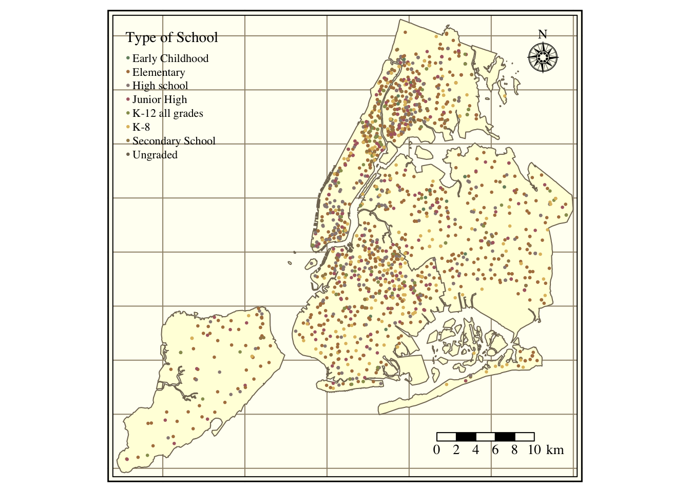
Figure 1: Schools over New York City
Show the Code
# Create the plot data# Simplify the shapefileplot =left_join(NtaShp, econ |>mutate(MedianIncome = MedianIncome/1000))# Plot the map of schools in New Yorktmap_style("classic"); tm_graticules(labels.inside.frame = T, labels.show = F) +tm_shape(plot) +tm_fill(col ="MedianIncome", style ="quantile", n =10, title ="Median Income (Ths.)", palette ="RdBu", colorNA ="black", textNA ="No Data") +tm_borders(lwd =0.5) +tm_compass(type ="rose", position =c("right", "top"), size =2) +tm_scale_bar(width =0.2, position =c("right", "bottom"), text.size =1)
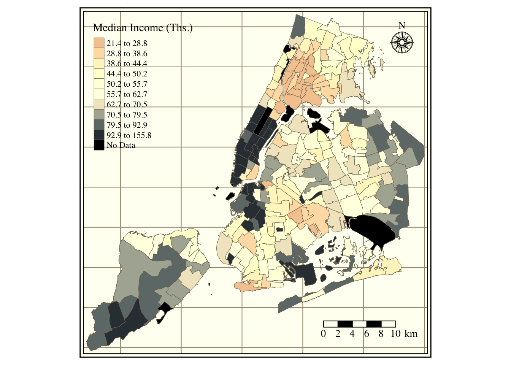
Figure 2: Average Income across NYC neighborhoods
Show the Code
# Create the plot data# Simplify the shapefileplot =left_join(NtaShp, dem)# Plot the map of schools in New Yorktmap_style("classic"); tm_graticules(labels.inside.frame = T, labels.show = F) +tm_shape(plot) +tm_fill(col ="ShareWhite", style ="quantile", n =10,title =str_wrap("Share of Persons Identifying as White", width =25),palette ="RdBu", colorNA ="black", textNA ="No Data") +tm_borders(lwd =0.5) +tm_compass(type ="rose", position =c("right", "top"), size =2) +tm_scale_bar(width =0.2, position =c("right", "bottom"), text.size =1)
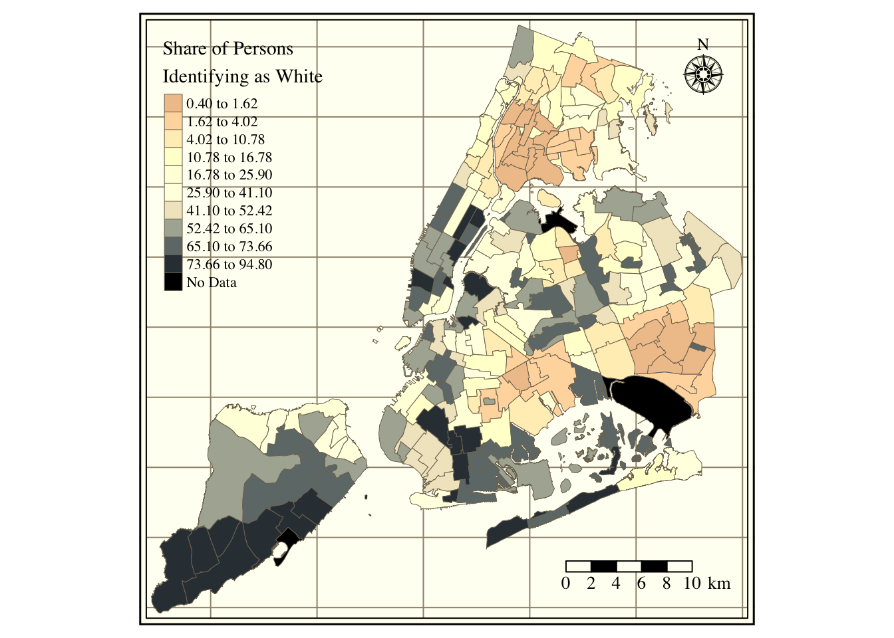
Figure 3: Share of white persons per neighborhood
Show the Code
# Create the plot data# Simplify the shapefileplot =left_join(NtaShp, asthma)# Plot the map of schools in New Yorktmap_style("classic"); tm_graticules(labels.inside.frame = T, labels.show = F) +tm_shape(plot) +tm_fill(col ="HospChildrenRate", style ="quantile", n =10, title =str_wrap("Children Hospitalization Rate (Cases per 10,000 Kids)", width =30),palette ="RdBu", colorNA ="black", textNA ="No Data") +tm_borders(lwd =0.5) +tm_compass(type ="rose", position =c("right", "top"), size =2) +tm_scale_bar(width =0.2, position =c("right", "bottom"), text.size =1)
Figure 4: Children hospitalization rate per neighborhood
Table 1 contains descriptive statistics on absent, released, and enrolled students. There are 3,339,158 observations across 1,854 schools. On average, there are 56 daily absences per school in the city of New York. This is equivalent to around 9.04% of enrolled students. The absences have a median of 39 and a standard deviation of 75. Concerning released students, 2 (0.40%) students are released from school on an average day. Additionally, and in line with an over-dispersed Poisson distribution, releases have a median of 0 and a standard deviation of 27 pupils per day.
Table 1: Descriptive Statistics on School Absences
Variable
Mean
Median
SD
Min
Max
N
NAs
Absent Students
56.34
39
74.74
0
3511
3339158
0
Released Students
2.46
0
27.29
0
3777
3338834
324
Enrolled Students
622.96
497
511.04
1
5850
3339158
0
Figure 5 shows the number of schools per year reporting absences. Between 2008 and 2018, the number of reporting schools moved from a minimum of 1,545 in 2008 to a maximum of 1,659 in 2016. There are 1,365 schools in the data set that reported absenteeism for all years between 2008 and 2018. Although I use the entire sample in the regression analysis, I provide evidence that our results are robust to only focusing on the set of schools that never drop the panel.
Show the Code
# Number of schools reporting absences per yearabsent |>filter(DayType =="NormalDay") |>group_by(year) |>summarise(Schools =length(unique(id))) |>filter(year >2007) |>mutate(year =as_factor(year)) %>%ggplot() +geom_line(aes(x = year, y= Schools, group =1), size =0.75) +geom_point(aes(x = year, y= Schools), color ="red") +labs(y ="", x ="Year") +theme_economist() %+replace%theme(legend.title =element_blank(), plot.background =element_blank()) +grids("y")
Figure 5: Number of reporting schools
Figure 6 portrays the density function of school absences. As expected, the distribution of absences resembles a gamma probability density function with most of the density between zero and one hundred units.
Show the Code
# Create the plotplot = absent |>ungroup() |>filter(DayType =="NormalDay") |>filter(absent <quantile(absent, 0.99, na.rm = T)) |>group_by(date) |>summarise(absent =mean(absent, na.rm = T))# Construct the ggplotggplot(plot) + ggdist::stat_halfeye(aes(x = absent), height = .6, justification =-.3,.width =0, point_colour =NA, fill ="#141f52") +geom_point(aes(x = absent, y =0), size =0.2, alpha = .2, position =position_jitter(seed =1, height =0.1), color ="red")+geom_boxplot(aes(x = absent), width = .25, fill ="transparent", outlier.shape =NA) +labs(y ="", x ="Absent Students") +theme_economist() %+replace%theme(legend.title =element_blank(), plot.background =element_blank()) +grids("y")
Figure 6: Density distribution of School Absences
Figure 7 plots the time series of school absences. Each bar represents a day between 2006 and 2018. The breaks in the time series refer to the summer and winter breaks. Overall, it is reassuring to see no extreme changes in average school absences across our sample period. Note that drastic jumps in the number of absent students often coincide with weather events. For instance, the significant increase in 2014 refers to the 2014 nor’easter and in 2012 to intense snowfall.
Show the Code
# Create the data for the plotplot = absent |>filter(DayType =="NormalDay") |>filter(absent <quantile(absent, 0.99, na.rm = T)) |>group_by(date, year) |>summarise(absent =mean(absent)) |>ungroup() |>mutate(RollMean =rollmean(absent, k =5, fill =NA))# Plot itggplot(plot) +geom_bar(aes(x = date, y = absent, fill =as_factor(year)), size =0.05, stat ="identity") +labs(y ="Mean Absences", x ="Date") +guides(fill ="none") +theme_economist() %+replace%theme(legend.title =element_blank(), plot.background =element_blank()) +grids("y")
Figure 7: Time Series of Daily School Absences
In Figure 8, we portray the average value of school absences across months of the year. The first thing to notice is a significant increase in absences for the month before the summer holidays. Additionally, absences appear to be higher during the winter months of December to February because of weather conditions and seasonal influenza. Regarding variation within weeks (?@fig-WeeklyTS). There are more increased absences on Fridays and Mondays and lower throughout the rest of the week.
Show the Code
# Construct the data for the plot plot =list(`Monthly Variation`= absent |> dplyr::filter(DayType =="NormalDay") |>filter(absent <quantile(absent, 0.99, na.rm = T)) |>mutate(month =month(date, label = T)) |>group_by(ts = month) |>summarise(absent =mean(absent, na.rm = T)) ,`Weekday Variation`= absent |> dplyr::filter(DayType =="NormalDay") |>filter(absent <quantile(absent, 0.99, na.rm = T)) |>mutate(weekday =substr(weekday, 1,2)) |>group_by(ts = weekday) |>summarise(absent =mean(absent, na.rm = T))) %>%rbindlist(., idcol ="window")# Plot the time seriesggplot(plot) +geom_bar(aes(x = ts, y = absent, group =1), stat ="identity", fill ="#141f52") +geom_point(aes(x = ts, y = absent, group =1), color ="red") +labs(y ="Mean Absences", x ="") +guides(fill ="none") +theme_economist() %+replace%theme(legend.title =element_blank(), plot.background =element_blank()) +grids("y") +facet_wrap(~window, scales ="free")
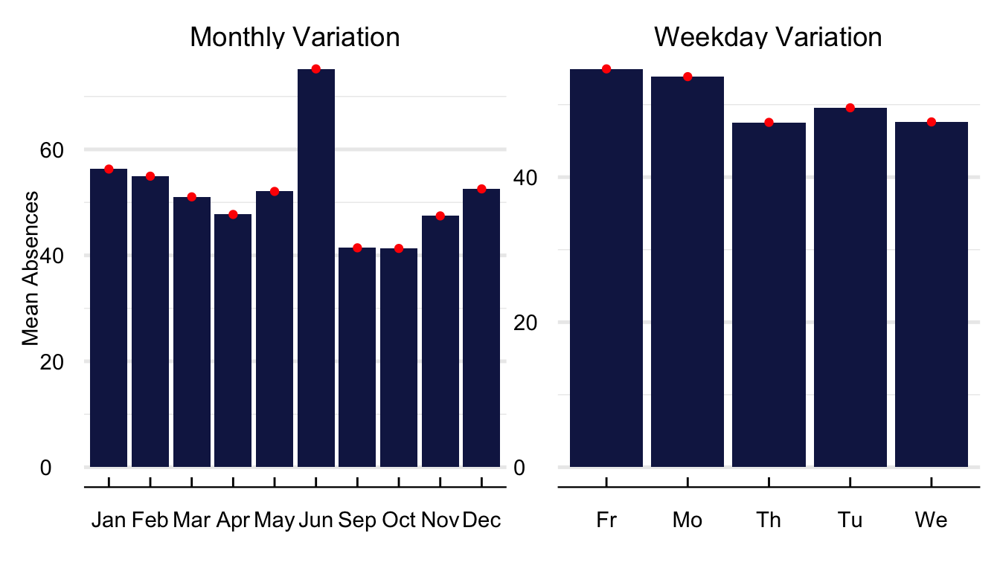
Figure 8: Monthly Variation in School Absences
Throughout the study, we aggregate the school-level data into neighborhood averages for three main reasons. First, aggregating data reduces the noise from school-specific miss-recordings and human error. Second, it is easier to match socio-demographic data from the American Community Survey. And third, it decreases the computational burden of our empirical strategy.
Table 2 contains descriptive statistics on school absences at the neighborhood level. The NTA data contains 379,120 observations across 0 neighbourhoods. On average, there are 491 absences per day, equivalent to around 8.90% of enrolled students. The absences have a median of 354 and a standard deviation of 573. Concerning released students, 9 (0.16%) students are released from school on an average day.
Table 2: Descriptive Statistics on School Absences at the neighborhood level
Variable
Mean
Median
SD
Min
Max
N
NAs
Absent Students
491.29
354
572.72
0
22819
379120
0
Released Students
8.84
0
75.01
0
3801
379120
0
Enrolled Students
5521.89
4746
3697.11
229
67963
379120
0
The next set of figures contains different descriptive statistics of school absences at the neighborhood level. First, Figure 9 has the density function of the log of absent daily students per neighborhood. Next, the map in Figure 10 includes the average number of students enrolled per NTA. Figure 11 refers to the average share of annual absences, i.e., absences/enrollment.
# Construct the data for the plot AbsentNta =left_join(absent |>filter(DayType =="NormalDay") |>filter(absent <quantile(absent, 0.99, na.rm = T)), location) |>group_by(nta, ntacode,date) |>summarise_at(vars(enrolled, absent, released), sum, na.rm = T) |>filter(absent >0)# Plot the time seriesggplot(AbsentNta) +stat_halfeye(aes(x =log(absent)), height = .6, justification =-.3, .width =0, point_colour =NA, fill ="#141f52") +geom_point(aes(x =log(absent), y =0), size =0.2, alpha = .2, position =position_jitter(seed =1, height =0.1), color ="red")+geom_boxplot(aes(x =log(absent)), width = .25, fill ="transparent", outlier.shape =NA) +labs(y ="", x ="Log of Absent Students") +theme_economist() %+replace%theme(legend.title =element_blank(), plot.background =element_blank()) +grids("y")
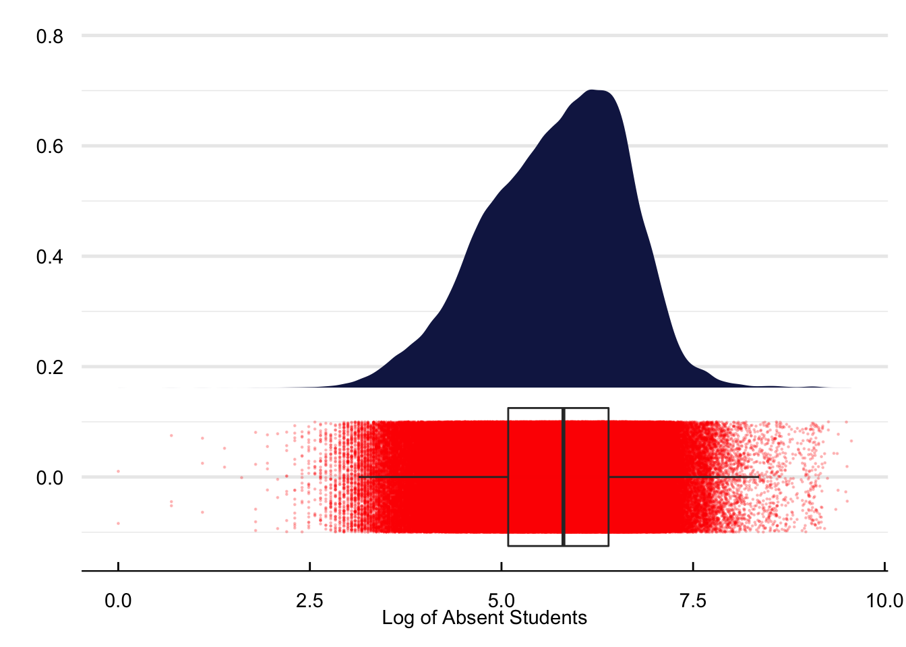
Figure 9: Density plot of school absences at the NTA level
Show the Code
# Construct the data for the plot map = AbsentNta |>group_by(ntacode) |>summarise(`Avg. Enrolled Students`=mean(enrolled, na.rm = T)) %>%left_join(NtaShp, .)# Plot the map seriestmap_style("classic"); tm_graticules(labels.inside.frame = T, labels.show = F) +tm_shape(map) +tm_fill(col ="Avg. Enrolled Students", style ="quantile", n =10, palette ="RdBu", colorNA ="white", textNA ="No Data") +tm_borders(lwd =0.5) +tm_compass(type ="rose", position =c("right", "top"), size =2) +tm_scale_bar(width =0.2, position =c("right", "bottom"), text.size =1)
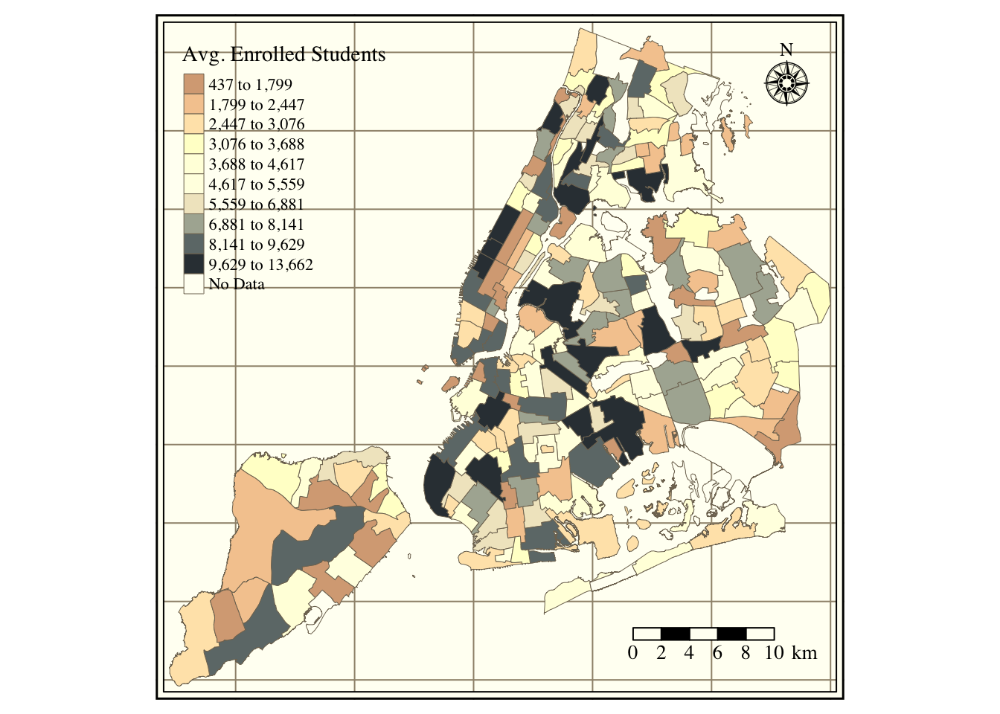
Figure 10: School enrollment per NTA
Show the Code
# Construct the data for the plot map = AbsentNta |>group_by(ntacode) |>summarise(`Share of Absences`=mean(absent, na.rm = T)/mean(enrolled, na.rm = T)) %>%left_join(NtaShp, .) |>mutate(`Share of Absences`=`Share of Absences`*100)# Plot the map seriestmap_style("classic"); tm_graticules(labels.inside.frame = T, labels.show = F) +tm_shape(map) +tm_fill(col ="Share of Absences", style ="quantile", n =10, palette ="RdBu", colorNA ="white", textNA ="No Data") +tm_borders(lwd =0.5) +tm_compass(type ="rose", position =c("right", "top"), size =2) +tm_scale_bar(width =0.2, position =c("right", "bottom"), text.size =1)
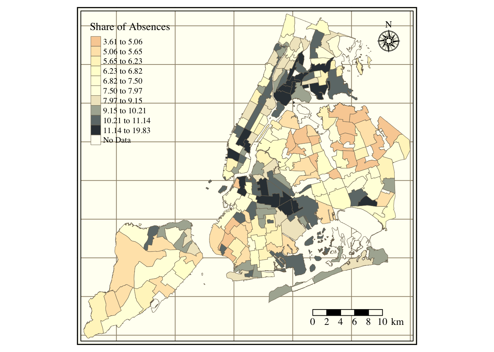
Figure 11: Share of absenteeism per NTA
Air Quality Index
Show the Code
# Set the path of the R-studio projectfile =gsub("website", "", getwd())aqif =read_rds(paste0(file, "/02_GenData/02_aqi/AqiForecast.rds"))aqi =read_rds(paste0(file, "/02_GenData/02_aqi/RealAqi.rds"))
Table 3 contains descriptive statistics on the AQI and its forecast. The average and maximum forecast is slightly smaller (50.39) than the AQI (54.36). The average AQI is 54.36, slightly above the EPA threshold between good and moderate air quality.
Show the Code
# Construct the data set for the summary tabletab =left_join(filter(aqif, date <"2018-12-31", date >"2008-12-31"), aqi)# Summary tablesumtable(select(ungroup(tab) ,aqi, RealAqi), digits =2, fixed.digits = T, summ =c("mean(x)", "median(x)", "sd(x)", "min(x)", "max(x)", "notNA(x)","countNA(x)"), summ.names =c("Mean", "Median", "SD", "Min", "Max", "N", "NAs"), labels =c("AQI Forecast", "AQI Real"), out ="kable") %>%kable_classic(full_width = F, html_font ="Cambria") %>%kable_styling(bootstrap_option =c("hover")) |>column_spec(c(1), italic = T, color ="DarkBlue")
Table 3: Descriptive Statistics on the air quality index
Variable
Mean
Median
SD
Min
Max
N
NAs
AQI Forecast
50.39
48
18.78
4
151
3565
0
AQI Real
54.36
51
21.21
16
208
3565
0
Figure 12 shows the average daily value of the forecast. Although there is no clear evidence of a long-term trend, seasonality does appear quite relevant for the time series. Summer (and to a lesser degree winter) forecasts are consistently higher than for the other seasons. Furthermore, the probability of forecasts higher than 100 units is also higher during the summer. For instance, out of 131 alerts, one hundred and five occurred during the summer, fourteen in the spring, eight in Autumn, and only four in the winter.
Show the Code
#### Construct the data for the plot plot =filter(aqif, date <"2018-12-31") |>mutate(season = hydroTSM::time2season(date, out.fmt ="seasons")) |>mutate(season =str_to_title(season)) #### Plot the time seriesggplot(plot) +geom_bar(aes(x = date, y =aqi, fill = season), stat ="identity", alpha =0.5) +geom_hline(aes(yintercept =100), color ="red") +labs(y ="Air Quality Index (Forecast)", x ="") +scale_fill_manual(values =c("Spring"="#F97A1F", "Summer"="#C91D42", "Winter"="#475ED1", "Autumm"="#B3B3B3")) +theme_economist() %+replace%theme(legend.title =element_blank(), plot.background =element_blank(),axis.title.y =element_text(vjust =2, angle =90)) +grids("y")
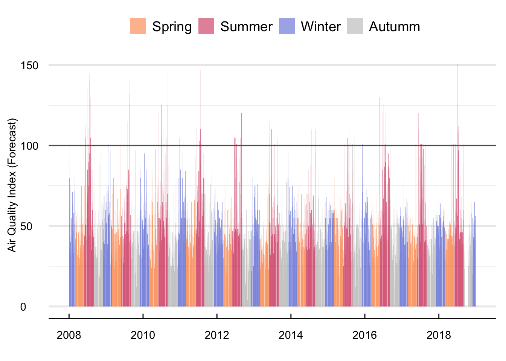
Figure 12: Mean daily value of the AQI forecast between 2008 and 2018
Figure 13 contains the average monthly, daily, and yearly value of forecast. Predicted values are significantly higher during the summer months of June to August and the Winter Months of December to January. While higher summer values are in line with higher ozone formation during the hotter months of the year because of the interaction of solar radiation with ozone precursors, higher winter measures relate to the lower efficiency of internal combustion engines at cold temperatures and the use of fossil fuels for residential heating. Even though the AQI value seems higher between 2008 and 2011 and lower after that, it is not straightforward to notice any long-term trend. Regarding weekday variation, there are slightly higher average values at the start of the week (Monday to Wednesday) and lower from Thursday to Sunday.
Show the Code
## Construct the data for the plot plot =list(Yearly =filter(aqif, date <"2018-12-31") |>mutate(year =substr(year(date),3,4)) |>group_by(frame = year) %>%summarise(aqi =mean(aqi, na.rm = T)), Monthly =filter(aqif, date <"2018-12-31") |>mutate(month =month(date, label = T)) |>group_by(frame = month) %>%summarise(aqi =mean(aqi, na.rm = T)), Weekly =filter(aqif, date <"2018-12-31") |>mutate(weekday =weekdays(date, abbreviate = T)) |>group_by(frame = weekday) %>%summarise(aqi =mean(aqi, na.rm = T))) %>%rbindlist(., idcol ="window")# Compute the deviation from the meanplot = plot |>group_by(window) |>mutate(change = ((aqi -mean(aqi))/mean(aqi))*100)# Plot the time series ggplot(plot) +geom_bar(aes(y = aqi, x = frame, group =1), fill ="#141f52", stat ="identity") +geom_point(aes(y = aqi, x = frame, group =1), color ="red") +labs(x ="", y ="Air Quality Index") +facet_wrap(~window, scales ="free") +theme_economist()%+replace%theme(legend.title =element_blank(), plot.background =element_blank(),axis.title.y =element_text(vjust =2, angle =90), strip.text =element_text(hjust =0)) +grids("y")
Figure 13: Mean monthly value of the AQI forecast
Figure 14 contains the density function of the AQI forecast. The forecasts appear normally distributed between zero and slightly before one hundred units. However, as we approach one hundred units, there is some clear bunching around the alert threshold, suggesting that the model used by the NYSDEC may work slightly differently when the forecast is in the neighborhood of the alert. In the empirical strategy, we exploit this bunching to identify the effects of the alert on school absences.
Show the Code
# Plot the time series ggplot(aqif) + ggdist::stat_halfeye(aes(x = aqi), height = .6, justification =-.3,.width =0, point_colour =NA, fill ="#141f52") +geom_point(aes(x = aqi, y =0), size =0.2, alpha = .2, position =position_jitter(seed =1, height =0.1), color ="red") +geom_boxplot(aes(x = aqi), width = .15, fill ="transparent", outlier.shape =NA, color ="black") +coord_cartesian(ylim =c(-0.1, 0.8)) +theme_economist() %+replace%theme(legend.title =element_blank(), axis.title.y =element_text(vjust =2, angle =90), plot.background =element_blank()) +grids("y") +labs(x ="average AQI forecast", y ="")
Figure 14: Distribution of the AQI forecast
Figure 15 contains the time series (left panel) and density distribution (right panel) of average mean daily differences between the predicted and actual AQI. With a maximum difference of 56 and a minimum of -92 AQI units there appear to be relevant differences between both time series. These differences aggregate to an average between both variables of -3.9 with a standard deviation of 15.17 units.
Show the Code
#### Data for plotting daily differences between the AQI and the forecast ####plot =filter(aqif, date <"2018-12-31") |>mutate(season = hydroTSM::time2season(date, out.fmt ="seasons")) |>mutate(season =str_to_title(season)) %>%left_join(., aqi) |>mutate(diff = aqi-RealAqi)#### Time series of differencesggplot(plot) +geom_bar(aes(x = date, y =diff, fill = season), stat ="identity", alpha =0.5) +labs(y ="Differences between the AQI and its forecast", x ="") +scale_fill_manual(values =c("Spring"="#F97A1F", "Summer"="#C91D42", "Winter"="#475ED1", "Autumn"="#B3B3B3")) +theme_economist() %+replace%theme(legend.title =element_blank(), axis.title.y =element_text(vjust =2, angle =90), plot.background =element_blank()) +grids("y")#### Plot the density distribution of differences ####ggplot(plot) +stat_halfeye(aes(x = diff), height = .6,justification =-.3,.width =0, point_colour =NA, fill ="#141F52") +geom_point(aes(x = diff, y =0), size =0.2, alpha = .1, position =position_jitter(seed =1, height =0.1), color ="red") +geom_boxplot(aes(x = diff), width = .15, fill ="transparent", outlier.shape =NA, color ="black") +coord_cartesian(ylim =c(-0.1, 0.8)) +labs(x ="Difference between the AQI and its forecast", y ="") +theme_economist() %+replace%theme(legend.title =element_blank(), axis.title.y =element_text(vjust =2, angle =90), plot.background =element_blank()) +grids("y")
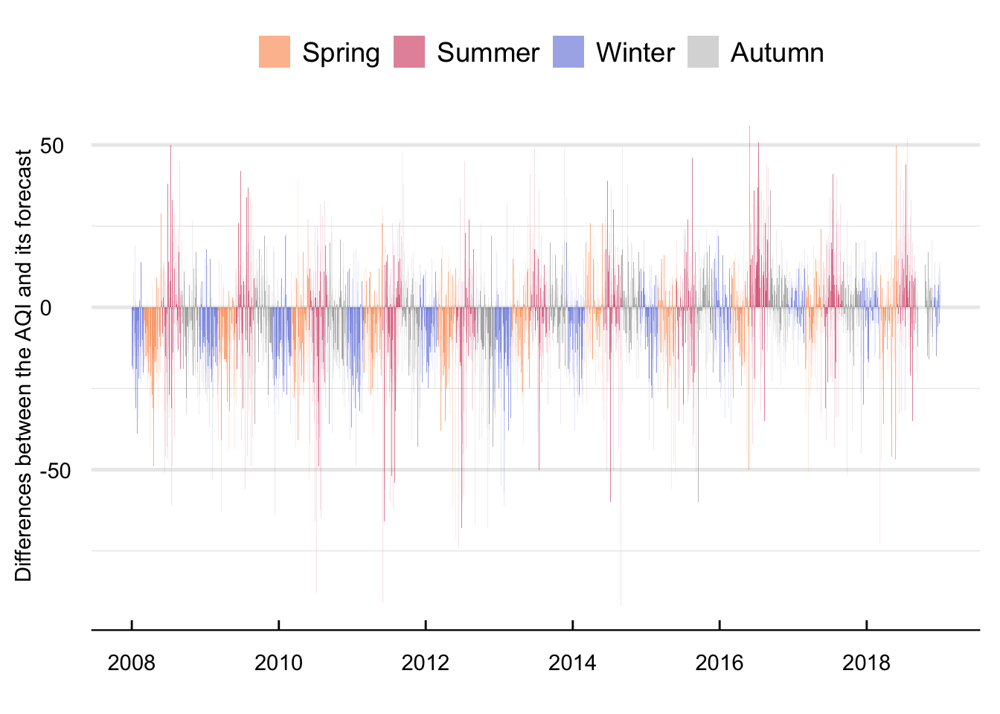
(a) Time Series
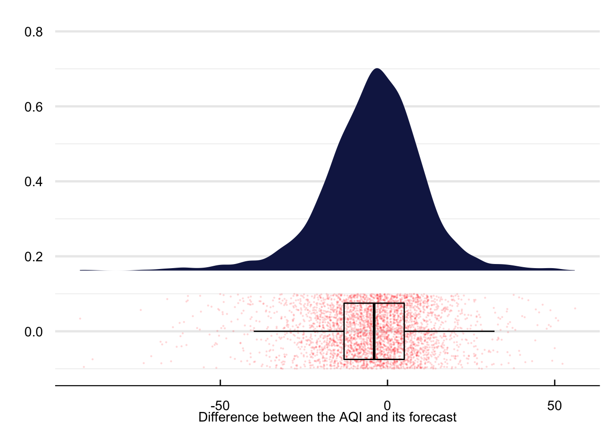
(b) Density
Figure 15: Mean daily difference of the AQI and its forecast between 2008 and 2018
Figure 16 portrays the average yearly, monthly, and weekday value of the AQI measure and its forecasts. The ability of the NYSDEC to predict the AQI increased between 2008 and 2017. With a mean difference in 2008 of close to four units and for 2018 of less than 0.5. It is interesting to see that the difference is lower during the summer months of June to August and higher at the start of the year between January and April. Regarding weekday differences, although the value of the AQI is consistently higher than its forecast, I cannot distinguish any pattern in the difference betweeen both time series.
Show the Code
#### Yearly Differences ####plot =filter(aqif, date <"2018-12-31") |>mutate(year =year(date)) %>%left_join(., aqi) |>group_by(frame = year) %>%summarise(`AQI Forecast`=mean(aqi, na.rm = T), `AQI Measure`=mean(RealAqi, na.rm = T)) %>%gather(., var, value, -frame)#### Plot it ####ggplot(plot) +geom_line(aes(y = value, x = frame, group = var, linetype = var)) +geom_point(aes(y = value, x = frame, group =1, color = var)) +labs(x ="", y ="") +scale_color_manual(values =c("#141F52", "#c91d42")) +scale_x_continuous(breaks =pretty_breaks()) +theme_economist()%+replace%theme(legend.title =element_blank(), plot.background =element_blank(),axis.title.y =element_text(vjust =2, angle =90)) +grids("y")#### Monthly time series ####plot =filter(aqif, date <"2018-12-31") |>mutate(month =month(date, label = T)) %>%left_join(., aqi) |>group_by(frame = month) %>%summarise(`AQI Forecast`=mean(aqi, na.rm = T), `AQI Measure`=mean(RealAqi, na.rm = T)) %>%gather(., var, value, -frame)#### Plot it ####ggplot(plot) +geom_line(aes(y = value, x = frame, group = var, linetype = var)) +geom_point(aes(y = value, x = frame, group =1, color = var)) +labs(x ="", y ="") +scale_color_manual(values =c("#141F52", "#c91d42")) +theme_economist()%+replace%theme(legend.title =element_blank(), plot.background =element_blank(),axis.title.y =element_text(vjust =2, angle =90)) +grids("y")#### Weekday differences ####plot =filter(aqif, date <"2018-12-31") |>mutate(weekday =weekdays(date)) %>%left_join(., aqi) |>group_by(frame = weekday) %>%summarise(`AQI Forecast`=mean(aqi, na.rm = T), `AQI Measure`=mean(RealAqi, na.rm = T)) %>%gather(., var, value, -frame) %>%mutate(frame =as_factor(frame)) |>mutate(frame =fct_relevel(frame, c("Sunday", "Monday", "Tuesday", "Wednesday", "Thursday", "Friday", "Saturday")))#### Plot it ####ggplot(plot) +geom_line(aes(y = value, x = frame, group = var, linetype = var)) +geom_point(aes(y = value, x = frame, group =1, color = var)) +labs(x ="", y ="") +scale_color_manual(values =c("#141F52", "#c91d42")) +theme_economist()%+replace%theme(legend.title =element_blank(), plot.background =element_blank(),axis.title.y =element_text(vjust =2, angle =90)) +grids("y")
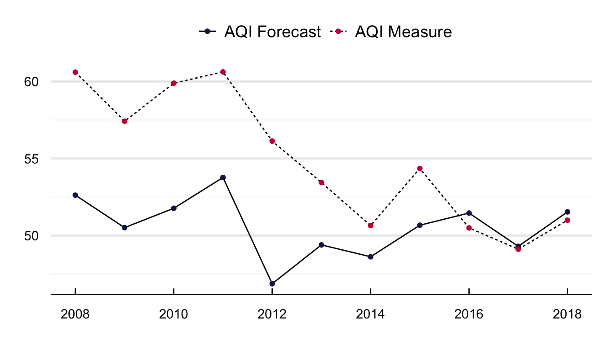
(a) Monthly
(b) Weekly
(c) Yearly
Figure 16: Mean difference in the AQI and its forecast
Figure 17 contains the density distributions of the real and forecasted AQIs. Two things stand out. First, the AQI forecast has more density around its median and a smaller tail; second, there is a clear difference in the bunching of the forecast around 100 units.
Show the Code
plot =filter(aqif, date <"2018-12-31") |>mutate(weekday =weekdays(date)) %>%left_join(., aqi) %>%select(date, `AQI Forecast`= aqi, `AQI Measure`= RealAqi) %>%gather(., var, value, -date)# Plot the time series ggplot(plot) + ggdist::stat_halfeye(aes(x = value, fill = var), height = .6, justification =-.3,.width =0, point_colour =NA, alpha =0.5) +geom_boxplot(aes(x = value, color = var), width = .25, fill ="transparent", outlier.shape =NA) +coord_cartesian(ylim =c(-0.1, 0.8)) +labs(x ="", y ="") +scale_fill_manual(values =c("#141F52", "#c91d42")) +scale_color_manual(values =c("#141F52", "#c91d42")) +theme_economist() %+replace%theme(legend.title =element_blank(), plot.background =element_blank(),axis.title.x =element_text(vjust =-2)) +grids("y")
Figure 17: Density functions of the real and forecasted AQI values